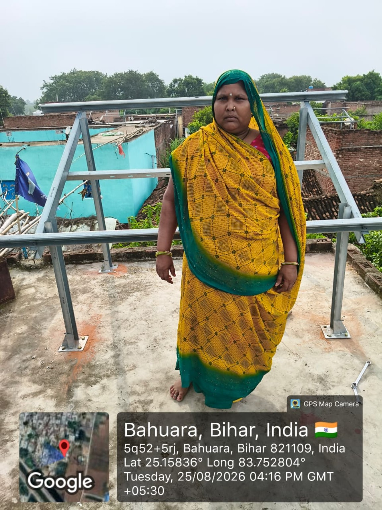
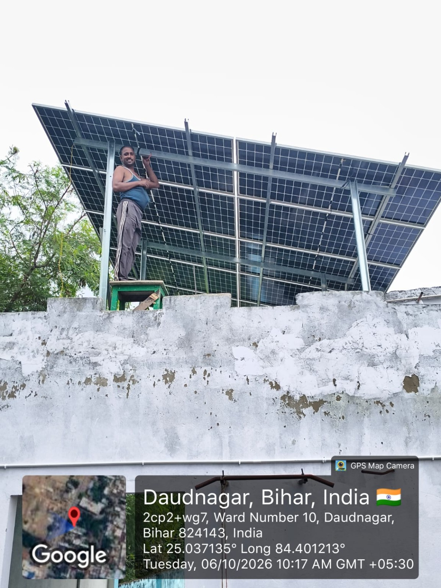
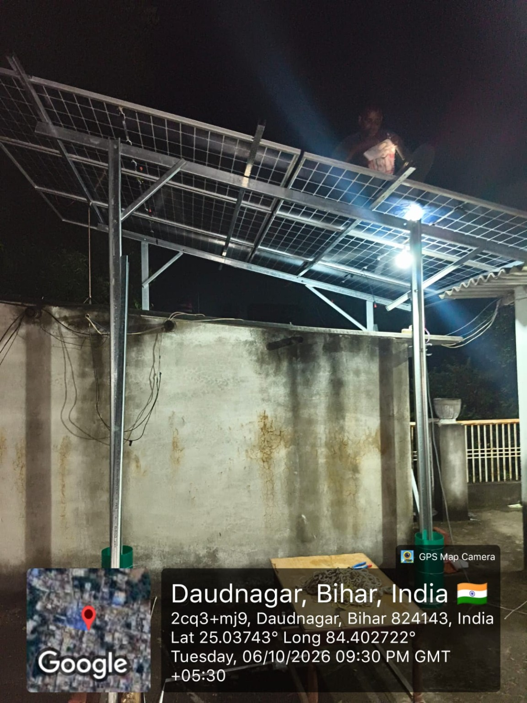
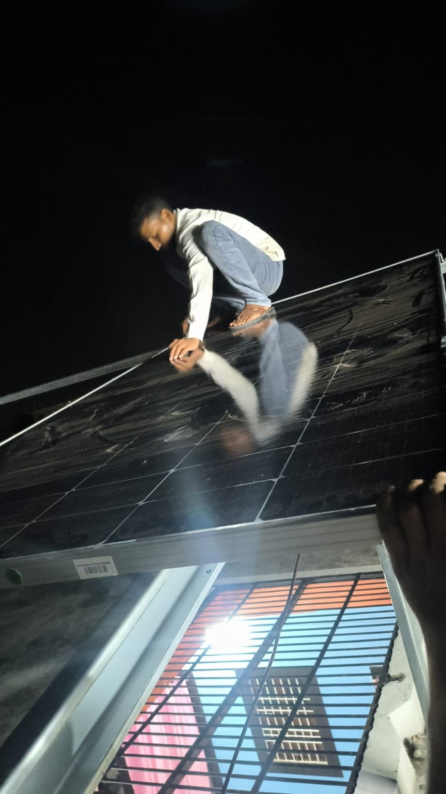

Aurangabad, Bihar
5 kW • Rooftop Solar Installation
Real installation photos supplied for this website. Project capacity labels follow the details you provided.
5 kW • Rooftop Solar Installation

2 kW • Rooftop Solar Installation

3 kW • Rooftop Solar Installation

5 kW • Solar Structure & Installation

3 kW • Installation Work